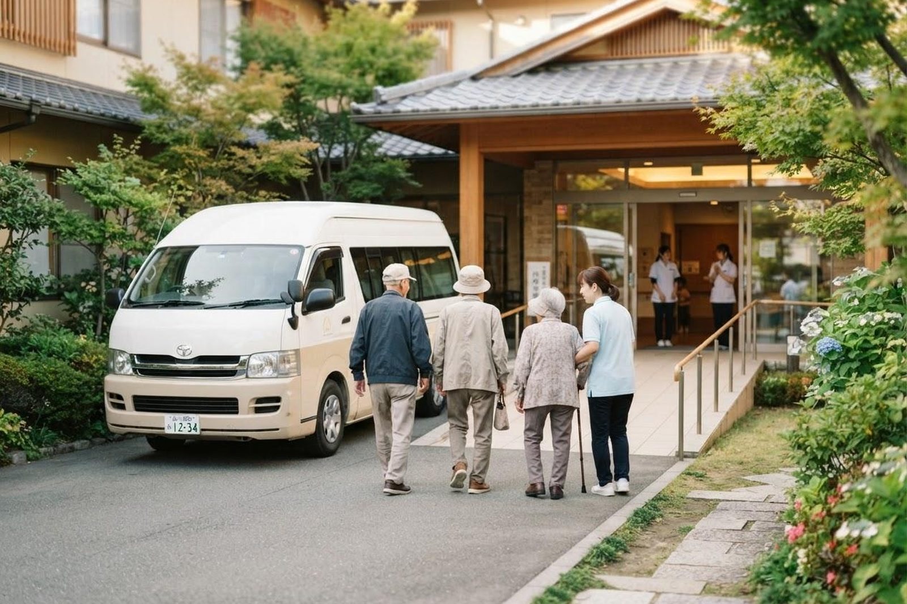

親がデイサービスに行きたがりません。どうすればよいですか？
A. 回答珍しいことではありません。多くのご家族が同じところでつまずかれます。「年寄り扱いされたくない」「知らない場所に行きたくない」「家族に迷惑をかけたくない」——理由には型があり、それによって試せることが変わります。無理に押し切ると、かえって長引くことが多いところです。まずは何が嫌なのかを、責めずに聞いてみてください。

よくある理由と、試せること
| おっしゃること | 背景にありそうなこと | 試せること |
|---|---|---|
| 「年寄りの行くところだろう」 | 自分がそこに入る側だと認めたくない | 「介護」ではなく「体を動かす教室」「お風呂」といった言い方に変える |
| 「知らない人ばかりで嫌だ」 | 初めての場所への不安 | まず見学だけ行く。1日ではなく半日から始める |
| 「家にいれば十分だ」 | 必要性を感じていない | ご本人のためではなく「私が助かるから」と伝える方が通ることがあります |
| 「行っても何もすることがない」 | 実際に合っていない可能性 | 事業所を変える。リハビリ中心のところなど、性格が違います |
| 理由を言わない | 失禁や入浴を人に見られることへの抵抗 | 言いにくいことなので、ケアマネジャー経由で確認してもらう |
デイサービスでは実際に何をしますか
事業所によって性格が違いますが、おおむね次のような1日です。
- 送迎で迎えに来ます（お住まいが送迎の範囲内かは事業所によります）
- 体温や血圧を確認します
- 入浴。おひとりで浴槽をまたぐのが難しい方向けの設備がある事業所もあります
- 昼食。きざみ食やとろみをつけた食事に対応できるところもあります
- 体を動かす時間、口の機能を保つ体操、レクリエーション
- 送迎で帰宅します
体験利用を使ってください
多くの事業所で、見学と体験の利用ができます。「1回だけ試して、嫌ならやめていい」という形にすると、ご本人も受け入れやすくなります。実際に行ってみたら気に入った、という方は少なくありません。逆に、合わないことがわかるのも収穫です。事業所は変えられます。
それでも難しいとき
どうしても通うことが合わない方もいらっしゃいます。その場合は、ヘルパーに来てもらう、訪問看護で入浴の介助を受ける、通いと訪問を組み合わせられる小規模多機能を使うなど、別の形があります。サービスの違いもご覧ください。
そして、行かせられないことをご自分の責任と感じる必要はありません。ご本人にも事情があり、時期が来れば変わることもあります。困っているときは、ひとりで抱えずにケアマネジャーや高齢者支援センターにお話しください。
当法人のデイサービス
デイサービスセンターこはる日和では、見学と体験の利用を受け付けています。機械浴を備えており、利用日にそのままいなだ医院を受診していただくこともできます。
当院では訪問診療・訪問看護を行っているほか、デイサービス・訪問介護・小規模多機能ホーム「こはる日和」、かしわじま居宅介護支援センター、サービス付高齢者向け住宅「メディケアビレッジかしわじま」を運営しています。医療と介護のどちらの窓口からでもご相談いただけます。
見学や体験のご相談を受け付けています。まずはご覧になってください。
最終更新：2026年8月26日